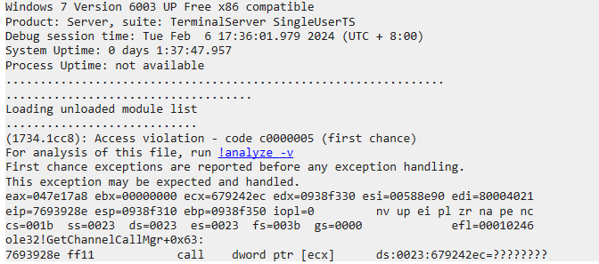
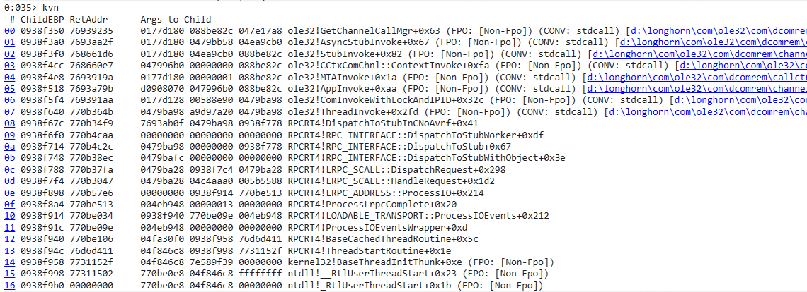
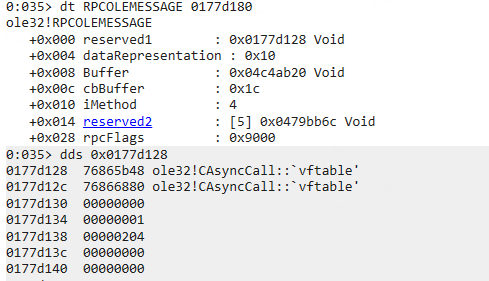
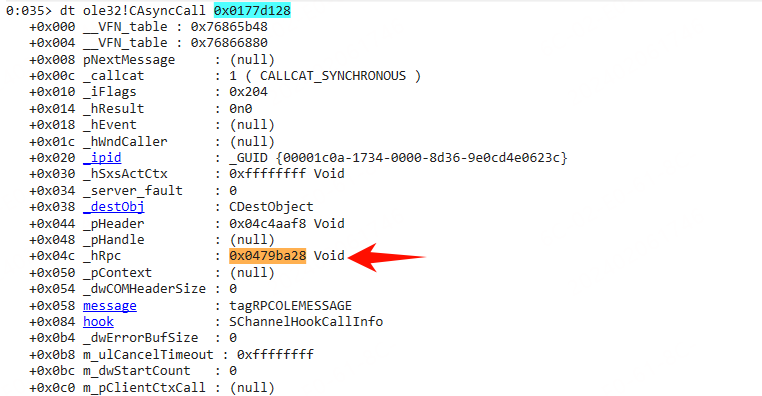
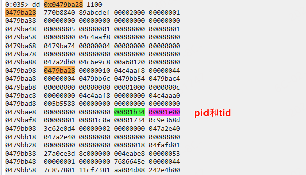
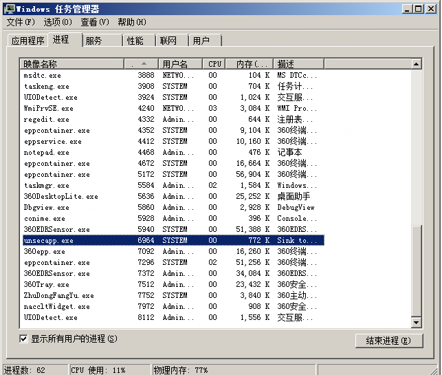

概述：异步通知 IWbemServices::ExecNotificationQueryAsync 的使用问题。调用 CancelAsyncCall 之后导致程序崩溃。
0x01 复现场景
- 环境：windows server 2008
参考微软官方代码实现一个进程，使用Windbg 加载进程，然后等待进程结束，就能看到Windbg 报错 0xC0000005。
0x02 dmp分析
-
报错详情
（调用 CancelAsyncCall 的进程）主要问题还是访问了空指针导致的，并且是 ecx。是类成员函数调用时出现异常。this 指针为空。

-
堆栈
ole32!GetChannelCallMgr 函数原型：
cppHRESULT GetChannelCallMgr(RPCOLEMESSAGE *pMsg, IUnknown * pStub, IUnknown *pServer, CRpcChannelBuffer::CServerCallMgr **ppStubBuffer)直接看第一个参数
pMsg。

-
查看下调用方
成员变量
reserverd1保存了RPC相关信息。 先dds再dt查看其内容。


CAsyncCall 的成员可以查看 Windows-Server-2003/com/ole32/com/dcomrem/call.hxx at 5c6fe3db626b63a384230a1aa6b92ac416b0765f · selfrender/Windows-Server-2003 中相关源码。
成员变量 _hRPC 来自于其继承的父类 CMessageCall
293 handle_t _hRpc; // Call handle (not binding handle)._hRpc 记录了调用方的句柄。查看 0x0479ba28 内存，在其附近找到了调用方的 PID 和 TID。如下图所示：

-
看下 PID 对应的进程，如下图所示：
unsecapp 也就是我们注册的异步通知的通知方。

0x03 问题分析
基本分析完 dmp 文件之后，可以确定是我们注册的异步通知在程序结束时被调用了，导致 unsecapp 通知过来之后，调用了空指针。
为什么会出现这种问题，可以看下 unsecapp 的堆栈，上边已经看到了具体的pid和tid，1b34.1b48, 这就直接看线程 1b38 的堆栈就可以了。
堆栈如下所示：
0 Id: 1b34.1b38 Suspend: 1 Teb: 7ffdf000 Unfrozen
# ChildEBP RetAddr Args to Child
00 0018e8b0 773354ac 76d6a8b7 00000002 0018e904 ntdll!KiFastSystemCallRet (FPO: [0,0,0])
01 0018e8b4 76d6a8b7 00000002 0018e904 00000001 ntdll!NtWaitForMultipleObjects+0xc (FPO: [5,0,0])
02 0018e950 77420f8d 0018e904 0018e978 00000000 kernel32!WaitForMultipleObjectsEx+0x11d (FPO: [Non-Fpo])
03 0018e9a4 76832507 0000002c 0018e9ec ffffffff USER32!RealMsgWaitForMultipleObjectsEx+0x13c (FPO: [Non-Fpo])
04 0018e9cc 768325bc 0018e9ec ffffffff 0018e9fc ole32!CCliModalLoop::BlockFn+0x97 (FPO: [Non-Fpo]) (CONV: thiscall) [d:\longhorn\com\ole32\com\dcomrem\callctrl.cxx @ 1162]
05 0018e9f4 76938f62 ffffffff 002c27a0 0018eb00 ole32!ModalLoop+0x5b (FPO: [Non-Fpo]) (CONV: stdcall) [d:\longhorn\com\ole32\com\dcomrem\chancont.cxx @ 211]
06 0018ea10 76939ce1 00000000 0018eb14 00000000 ole32!ThreadSendReceive+0x12c (FPO: [Non-Fpo]) (CONV: stdcall) [d:\longhorn\com\ole32\com\dcomrem\channelb.cxx @ 4831]
07 0018ea38 76939b4d 0018eb00 002cf4d8 0018eb5c ole32!CRpcChannelBuffer::SwitchAptAndDispatchCall+0x194 (FPO: [Non-Fpo]) (CONV: thiscall) [d:\longhorn\com\ole32\com\dcomrem\channelb.cxx @ 4386]
08 0018eb18 76833f94 002cf4d8 0018ec40 0018ec24 ole32!CRpcChannelBuffer::SendReceive2+0xef (FPO: [Non-Fpo]) (CONV: stdcall) [d:\longhorn\com\ole32\com\dcomrem\channelb.cxx @ 4009]
09 0018eb34 76833f46 0018ec40 0018ec24 002cf4d8 ole32!CCliModalLoop::SendReceive+0x1e (FPO: [Non-Fpo]) (CONV: thiscall) [d:\longhorn\com\ole32\com\dcomrem\callctrl.cxx @ 849]
0a 0018ebac 76853811 002cf4d8 0018ec40 0018ec24 ole32!CAptRpcChnl::SendReceive+0x73 (FPO: [Non-Fpo]) (CONV: stdcall) [d:\longhorn\com\ole32\com\dcomrem\callctrl.cxx @ 578]
0b 0018ec00 7712074c 002cf4d8 0018ec40 0018ec24 ole32!CCtxComChnl::SendReceive+0x1c5 (FPO: [Non-Fpo]) (CONV: stdcall) [d:\longhorn\com\ole32\com\dcomrem\ctxchnl.cxx @ 734]
0c 0018ec18 771207ad 002a37bc 0018ecdc 771211b0 RPCRT4!NdrProxySendReceive+0x43
0d 0018ec24 771211b0 45542f97 0018f0d8 070001f3 RPCRT4!NdrpProxySendReceive+0xc (FPO: [0,0,0])
0e 0018f09c 77120822 70b62ba8 70b621fc 0018f0d8 RPCRT4!NdrClientCall2+0x5e9
0f 0018f0c0 770aeb83 0018f0d8 00000004 0018f0f0 RPCRT4!ObjectStublessClient+0x6f
10 0018f0d0 6fc1a87e 002a37bc 00000000 80041032 RPCRT4!ObjectStubless+0xf
11 0018f0f0 004b2ec2 00eea0fc 00000000 80041032 fastprox!CSinkProxyBuffer::XSinkFacelet::SetStatus+0x2e (FPO: [Non-Fpo])
12 0018f128 770b3419 00262914 00000000 80041032 unsecapp!CStub::SetStatus+0x7b (FPO: [Non-Fpo])
13 0018f150 77121d35 004b2e47 0018f350 00000005 RPCRT4!Invoke+0x2a
14 0018f180 771220a1 00000000 002aeb9c 002df118 RPCRT4!NdrStubCall2+0x28a (FPO: [SEH])
15 0018f1c8 770b6e5f 76866918 70b62ba8 00000000 RPCRT4!NdrStubCall2+0x4ab (FPO: [SEH])
16 0018f1cc 76866918 70b62ba8 00000000 00000000 RPCRT4!NdrpClientUnMarshal+0x464 (FPO: [SEH])
17 0018f574 77122465 002d1e78 002cf658 002c31b8 ole32!NdrOleAllocate
18 0018f5c4 6fc1a8b7 002d1e78 002c31b8 002cf658 RPCRT4!CStdStubBuffer_Invoke+0xa0 (FPO: [SEH])
19 0018f5d8 7693a8c5 00eea174 002c31b8 002cf658 fastprox!CSinkStubBuffer::XSinkStublet::Invoke+0x36 (FPO: [Non-Fpo])
1a 0018f620 7693aa59 002c31b8 002bd800 002b5eb0 ole32!SyncStubInvoke+0x3c (FPO: [Non-Fpo]) (CONV: stdcall) [d:\longhorn\com\ole32\com\dcomrem\channelb.cxx @ 1161]
1b 0018f66c 768661d6 002c31b8 002cfd60 00eea174 ole32!StubInvoke+0xb9 (FPO: [Non-Fpo]) (CONV: stdcall) [d:\longhorn\com\ole32\com\dcomrem\channelb.cxx @ 1372]
1c 0018f748 768660e7 002cf658 00000000 00eea174 ole32!CCtxComChnl::ContextInvoke+0xfa (FPO: [Non-Fpo]) (CONV: stdcall) [d:\longhorn\com\ole32\com\dcomrem\ctxchnl.cxx @ 1255]
1d 0018f764 76866df5 002c31b8 00000001 00eea174 ole32!MTAInvoke+0x1a (FPO: [Non-Fpo]) (CONV: stdcall) [d:\longhorn\com\ole32\com\dcomrem\callctrl.cxx @ 2020]
1e 0018f790 7693a981 002c31b8 00000001 00eea174 ole32!STAInvoke+0x46 (FPO: [Non-Fpo]) (CONV: stdcall) [d:\longhorn\com\ole32\com\dcomrem\callctrl.cxx @ 1839]
1f 0018f7c4 7693a79b d0908070 002cf658 00eea174 ole32!AppInvoke+0xaa (FPO: [Non-Fpo]) (CONV: stdcall) [d:\longhorn\com\ole32\com\dcomrem\channelb.cxx @ 1060]
20 0018f8a0 7693ae2d 002c3160 002abff0 00000400 ole32!ComInvokeWithLockAndIPID+0x32c (FPO: [Non-Fpo]) (CONV: stdcall) [d:\longhorn\com\ole32\com\dcomrem\channelb.cxx @ 1675]
21 0018f8c8 76866bcd 002c3160 00000400 0029cc10 ole32!ComInvoke+0xc5 (FPO: [Non-Fpo]) (CONV: stdcall) [d:\longhorn\com\ole32\com\dcomrem\channelb.cxx @ 1445]
22 0018f8dc 76866b8c 002c3160 0018f99c 00000400 ole32!ThreadDispatch+0x23 (FPO: [Non-Fpo]) (CONV: stdcall) [d:\longhorn\com\ole32\com\dcomrem\chancont.cxx @ 298]
23 0018f920 7741fd72 00c600f6 00000400 0000babe ole32!ThreadWndProc+0x167 (FPO: [Non-Fpo]) (CONV: stdcall) [d:\longhorn\com\ole32\com\dcomrem\chancont.cxx @ 654]
24 0018f94c 7741fe4a 76866aef 00c600f6 00000400 USER32!InternalCallWinProc+0x23
25 0018f9c4 7742018d 00000000 76866aef 00c600f6 USER32!UserCallWinProcCheckWow+0x14b (FPO: [Non-Fpo])
26 0018fa28 7742022b 76866aef 00000000 0018fa68 USER32!DispatchMessageWorker+0x322 (FPO: [Non-Fpo])
27 0018fa38 004b4fd7 0018fa4c 71b6d20c 004b9118 USER32!DispatchMessageW+0xf (FPO: [Non-Fpo])
28 0018fa68 004b6749 457c3509 004b954c 00000001 unsecapp!MessageLoop+0x28 (FPO: [Non-Fpo])
29 0018fa98 004b41a2 00000002 00262228 002614a0 unsecapp!main+0x38c (FPO: [Non-Fpo])
2a 0018fadc 76d6d411 7ffd7000 0018fb28 7731152f unsecapp!_initterm_e+0x163 (FPO: [Non-Fpo])
2b 0018fae8 7731152f 7ffd7000 772f5944 00000000 kernel32!BaseThreadInitThunk+0xe (FPO: [Non-Fpo])
2c 0018fb28 77311502 004b42dc 7ffd7000 ffffffff ntdll!__RtlUserThreadStart+0x23 (FPO: [Non-Fpo])
2d 0018fb40 00000000 004b42dc 7ffd7000 00000000 ntdll!_RtlUserThreadStart+0x1b (FPO: [Non-Fpo])可以看到消息都是通过 DispatchMessageW 发送出去的。在后续rpc通知的时候，客户端可能已经调用了 CancelAsyncCall。当rpc执行的时候，就会出现崩溃问题。
0x04 解决方法
在 CancelAsyncCall 方法之后让当前线程阻塞一点时间，等待上次 unsecapp rpc调用结束，再调用 release 释放 IWbemServices 等相关对象。
补充
还是这个项目 selfrender/Windows-Server-2003: This is the leaked source code of Windows Server 2003
先看一下 CMessageCall 作为 CAsyncCall 的父类是有哪些成员的：
//-----------------------------------------------------------------
//
// Class: CMessageCall
//
// Purpose: This class adds a message to the call info. The
// proxie's message is copied so the call can be
// canceled without stray pointer references.
//
//-----------------------------------------------------------------
class CMessageCall : public ICancelMethodCalls, public IMessageParam
{
public:
// Constructor and destructor
CMessageCall();
protected:
virtual ~CMessageCall();
virtual void UninitCallObject();
public:
// called before a call starts and after a call completes.
virtual HRESULT InitCallObject(CALLCATEGORY callcat,
RPCOLEMESSAGE *message,
DWORD flags,
REFIPID ipidServer,
DWORD destctx,
COMVERSION version,
CChannelHandle *handle);
// IUnknown methods
STDMETHOD(QueryInterface)(REFIID riid, LPVOID *ppv) = 0;
STDMETHOD_(ULONG,AddRef)(void) = 0;
STDMETHOD_(ULONG,Release)(void) = 0;
// ICancelMethodCalls methods
STDMETHOD(Cancel)(ULONG ulSeconds) = 0;
STDMETHOD(TestCancel)(void) = 0;
// Virtual methods needed by every call type for cancel support
virtual void CallCompleted ( HRESULT hrRet ) = 0;
virtual void CallFinished () = 0;
virtual HRESULT CanDispatch () = 0;
virtual HRESULT WOWMsgArrived () = 0;
virtual HRESULT GetState ( DWORD *pdwState ) = 0;
virtual BOOL IsCallDispatched() = 0;
virtual BOOL IsCallCompleted () = 0;
virtual BOOL IsCallCanceled () = 0;
virtual BOOL IsCancelIssued () = 0;
virtual BOOL HasWOWMsgArrived() = 0;
virtual BOOL IsClientWaiting () = 0;
virtual void AckCancel () = 0;
virtual HRESULT Cancel (BOOL fModalLoop,
ULONG ulTimeout) = 0;
virtual HRESULT AdvCancel () = 0;
virtual void Abort() { Win4Assert(!"Abort Called"); }
// Query methods
BOOL ClientAsync() { return _iFlags & CALLFLAG_CLIENTASYNC; }
BOOL ServerAsync() { return _iFlags & CALLFLAG_SERVERASYNC; }
BOOL CancelEnabled() { return _iFlags & CALLFLAG_CANCELENABLED; }
BOOL IsClientSide() { return !(_iFlags & server_cs); }
BOOL FakeAsync() { return _iFlags & fake_async_cs; }
BOOL FreeThreaded() { return _iFlags & freethreaded_cs; }
void Lock() { _iFlags |= locked_cs; }
#if DBG == 1
void SetNAToMTAFlag() {_iFlags |= leave_natomta_cs;}
void ResetNAToMTAFlag(){_iFlags &= ~leave_natomta_cs;}
BOOL IsNAToMTAFlagSet(){ return _iFlags & leave_natomta_cs;}
void SetNAToSTAFlag() {_iFlags |= leave_natosta_cs;}
void ResetNAToSTAFlag(){_iFlags &= ~leave_natosta_cs;}
BOOL IsNAToSTAFlagSet(){ return _iFlags & leave_natosta_cs;}
#endif
BOOL Locked() { return _iFlags & locked_cs; }
BOOL Neutral() { return _iFlags & neutral_cs; }
BOOL ProcessLocal() { return _iFlags & process_local_cs; }
BOOL ThreadLocal() { return _iFlags & thread_local_cs; }
BOOL Proxy() { return _iFlags & proxy_cs; }
BOOL Server() { return _iFlags & server_cs; }
// Get methods
DWORD GetTimeout();
DWORD GetDestCtx() { return _destObj.GetDestCtx(); }
COMVERSION &GetComVersion() { return _destObj.GetComVersion(); }
CCtxCall *GetClientCtxCall() { return m_pClientCtxCall; }
CCtxCall *GetServerCtxCall() { return m_pServerCtxCall; }
BOOL GetErrorFromPolicy() { return (_iFlags & CALLFLAG_ERRORFROMPOLICY); }
HRESULT SetCallerhWnd();
HWND GetCallerhWnd() { return _hWndCaller; }
HANDLE GetEvent() { return _hEvent; }
CALLCATEGORY GetCallCategory(){ return _callcat; }
HRESULT GetResult() { return _hResult; }
void SetResult(HRESULT hr) { _hResult = hr; }
DWORD GetFault() { return _server_fault; }
void SetFault(DWORD fault) { _server_fault = fault; }
IPID & GetIPID() { return _ipid; }
HANDLE GetSxsActCtx() { return _hSxsActCtx; }
// Set methods
void SetThreadLocal(BOOL fThreadLocal);
void SetClientCtxCall(CCtxCall *pCtxCall) { m_pClientCtxCall = pCtxCall; }
void SetServerCtxCall(CCtxCall *pCtxCall) { m_pServerCtxCall = pCtxCall; }
void SetClientAsync() { _iFlags |= CALLFLAG_CLIENTASYNC; }
void SetServerAsync() { _iFlags |= CALLFLAG_SERVERASYNC; }
void SetCancelEnabled() { _iFlags |= CALLFLAG_CANCELENABLED; }
void SetErrorFromPolicy() { _iFlags |= CALLFLAG_ERRORFROMPOLICY; }
void ResetErrorFromPolicy() { _iFlags &= ~CALLFLAG_ERRORFROMPOLICY; }
void SetSxsActCtx(HANDLE hCtx);
// Other methods
HRESULT RslvCancel(DWORD &dwSignal, HRESULT hrIn,
BOOL fPostMsg, CCliModalLoop *pCML);
protected:
// Call object fields
CALLCATEGORY _callcat; // call category
DWORD _iFlags; // EChannelState
SCODE _hResult; // HRESULT or exception code
HANDLE _hEvent; // caller wait event
HWND _hWndCaller;// caller apartment hWnd (only used InWow)
IPID _ipid; // ipid of interface call is being made on
HANDLE _hSxsActCtx;// Activation context active in the caller's context
public:
// Channel fields
DWORD _server_fault;
CDestObject _destObj;
void *_pHeader;
CChannelHandle *_pHandle;
handle_t _hRpc; // Call handle (not binding handle).
IUnknown *_pContext;
// Structure
RPCOLEMESSAGE message;
SChannelHookCallInfo hook;
DWORD _dwErrorBufSize;
protected:
// Cancel fields
ULONG m_ulCancelTimeout; // Seconds to wait before canceling the call
DWORD m_dwStartCount; // Tick count at the time the call was made
CCtxCall *m_pClientCtxCall; // Client side context call object
CCtxCall *m_pServerCtxCall; // Server side context call object
};- 134行
message成员的结构体就是我们用来解析 reserved1 成员时使用的结构体。
可以使用 RPCOLEMESSAGE 的原因就是因为在 CAsyncCall 的另外一个函数中，当 RPC 服务端响应时，reserved 1 被 _hRPC 赋值了。而 _hRpc 则是在rpc建立连接时绑定的（调用函数为 RpcBindingInqAuthInfoExW 函数 (rpcdce.h) - Win32 apps | Microsoft Learn）。
inline void CAsyncCall::ServerReply()
{
Win4Assert( _hRpc != NULL );
if (_hResult != S_OK)
{
I_RpcAsyncAbortCall( &_AsyncState, _hResult );
}
else
{
// Ignore errors because replies can fail.
message.reserved1 = _hRpc;
I_RpcSend( (RPC_MESSAGE *) &message );
}
}